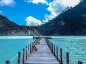

Lembang Park & Zoo
Kawah Putih adalah tempat wisata di Bandung yang paling terkenal. Berlokasi di Ciwidey, Jawa Barat, kurang lebih sekitar 50 KM arah selatan kota Bandung, Kawah Putih adalah sebuah danau yang terbentuk akibat dari letusan Gunung Patuha. Sesuai dengan namanya, tanah yang ada di kawasan ini berwarna putih akibat dari pencampuran unsur belerang. Selain tanahnya yang berwarna putih, air danau kawasan Kawah Putih juga mempunyai warna yang putih kehijauan dan dapat berubah warna sesuai dengan kadar belerang yang terkandung, suhu, dan cuaca.
Luas Lembang Park and Zoo sekitar 20 ha, sehingga dengan luas tersebut mampu menyajikan berbagai macam wahana. Meskipun baru hanya sampai 10 ha yang dapat tertata secara optimal. Bisa dibayangkan, jika luas 20 Ha sudah dapat terealisasi 100%, maka hanya tinggal menuju Lembang Park and Zoo, semua ragam wisata dapat dinikmati di kawasan tersebut.